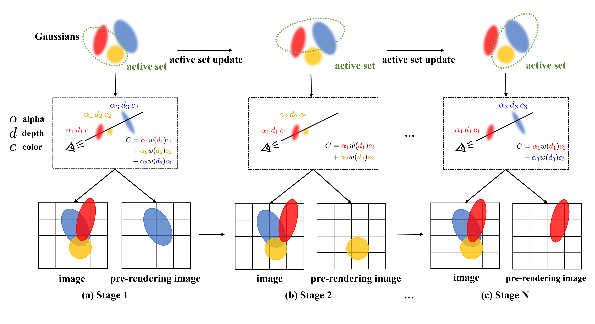

Quantitative comparison using PSNR, SSIM, and LPIPS metrics on the train scene.
SparseOIT: Improving Order-Independent Transparency 3DGS via Active Set Method
Abstract
3D Gaussian Splatting (3DGS) has received tremendous popularity over the past few years due to its photorealistic visual appearance. However, 3DGS uses volumetric rendering that is not suitable for objects with non-lambertian or transparent materials. To remedy this issue, a family of Order-Independent Transparency (OIT) rendering methods propose to remove or modify the depth sorting step in the 3DGS rendering equation. However, the potential of OIT-based method is still underexplored. In this paper, we observe that the OIT modifications to the rendering equation significantly reduce the inter-independence among individual gaussian splats, resulting in very sparse variable dependencies that can be harnessed by specific optimization techniques such as active set method. To this end, we propose SparseOIT, an OIT-based 3DGS reconstruction algorithm that maintains an active set of gaussian splats and enjoys an acceleration ratio that is proportional to the potential sparsity. SparseOIT is designed by jointly considering the OIT rendering equation, the reconstruction algorithm and the geometric regularization. Through extensive experiments, we demonstrate that SparseOIT outperforms existing methods in the OIT-family by a large margin and also achieves comparable performance to the state-of-the-art 3DGS reconstruction methods based on volumetric rendering.

Overview: Our SparseOIT framework takes multi-view images as input and follows the same optimization procedure as 3DGS in the early stage. After completing the first 15,000 iterations (including the densification phase), we switch to the proposed sparsity optimization with active set method. We organize the optimization into stages separated by active set updates. Before the each stage, we update the active set and use the pre-rendered result from the previous step (corresponding to the rendering of the inactive set). We then render images using the current active set, while simultaneously updating a new pre-rendered result that will serve as the input for the next stage.